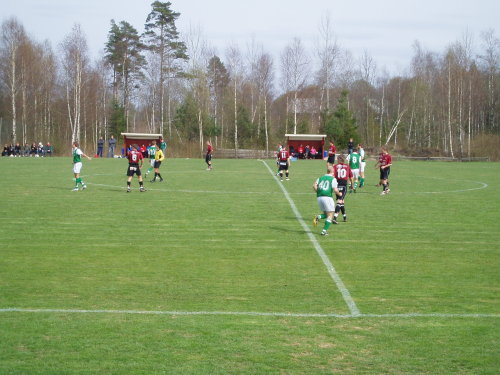

Fritid
På min fritid gillar jag att hitta på olika saker med mina kompisar, t.ex shoppa, laga mat och kolla på film. Jag tycker även om att spela datorspel som t.ex Valorant och Rocket league när jag vill ta det lite lugnt. Jag tycker också att det är viktigt och ganska kul att plugga så det gör jag också på min fritid.
Träning
Jag spelar också fotboll i Vederslöv Dänningelanda IF:s herrlag, främst i U-laget. Jag tycker det är kul men nu är säsongen typ slut så därför kör jag istället gym nu på vintern. Jag brukar mest gymma när jag har tid men blir oftast 3-4 ggr i veckan.
V/D IF:s Hemsida
